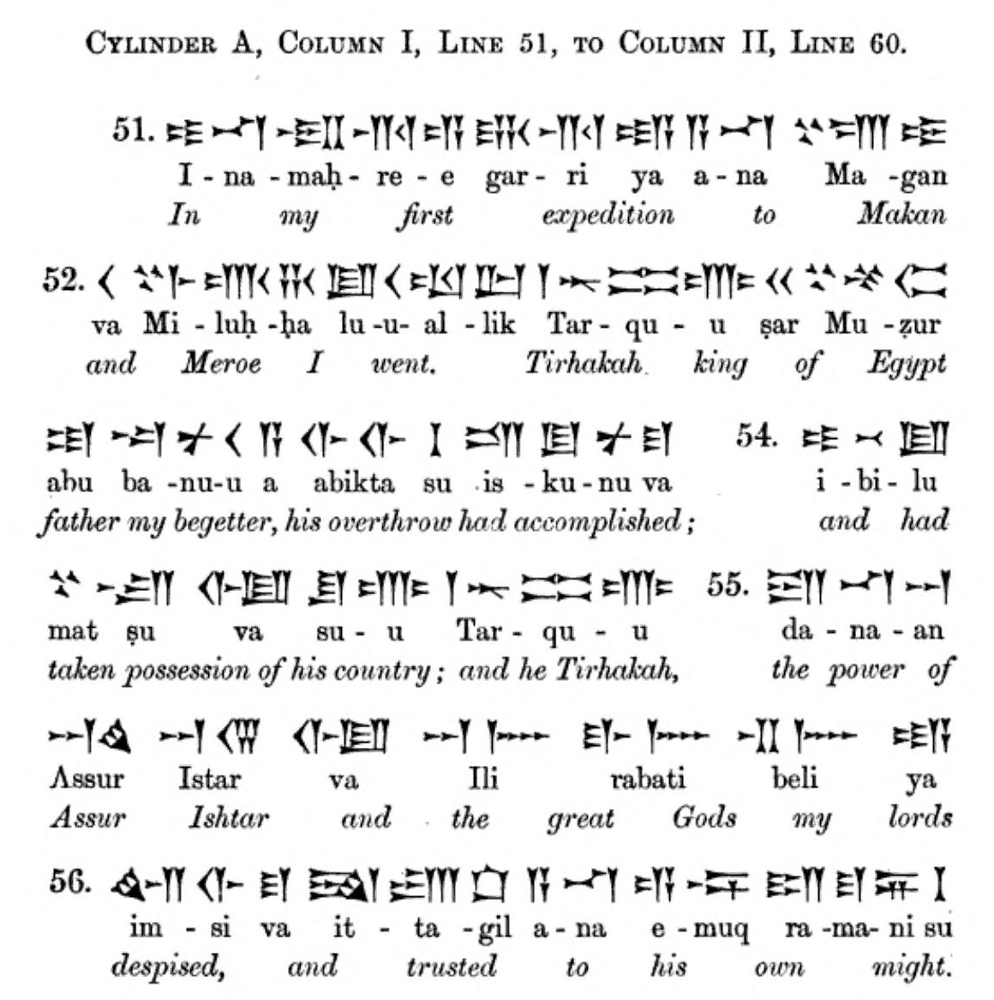
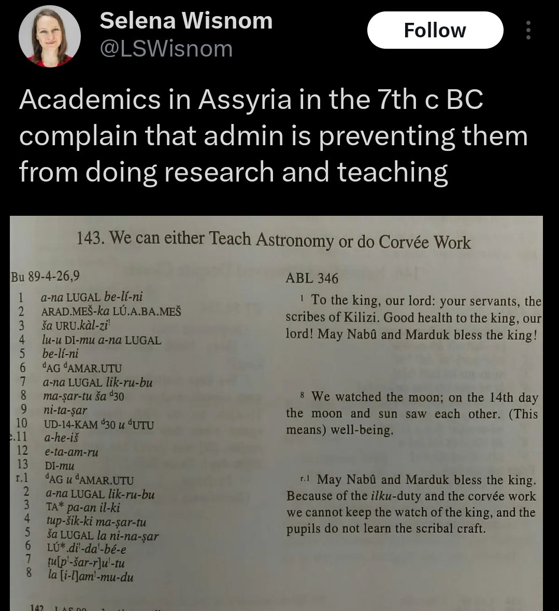
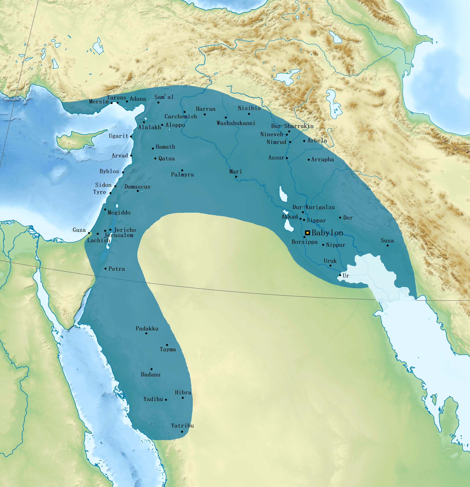
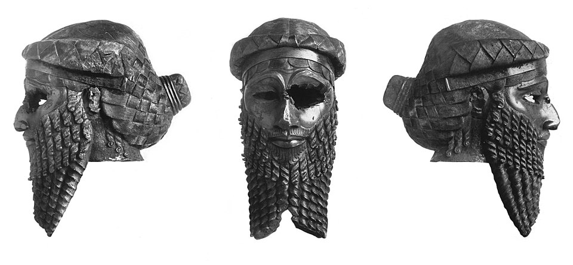
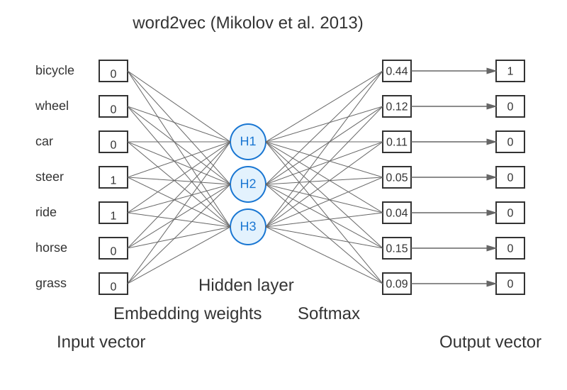
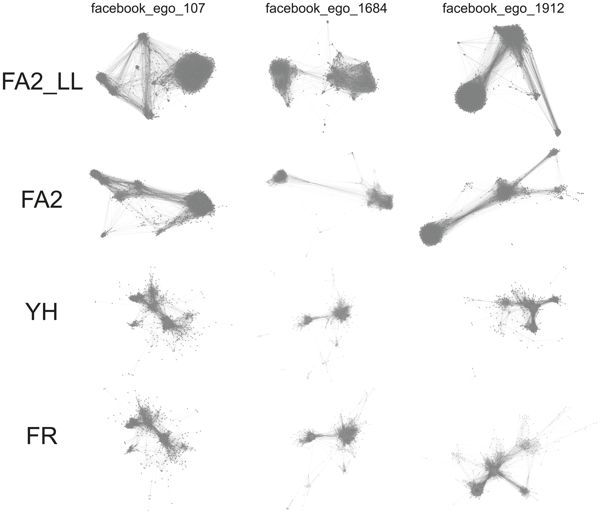
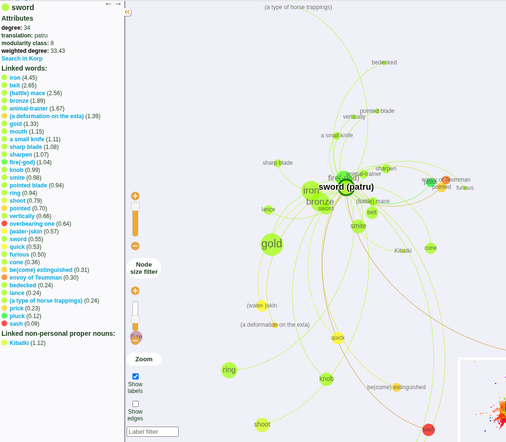
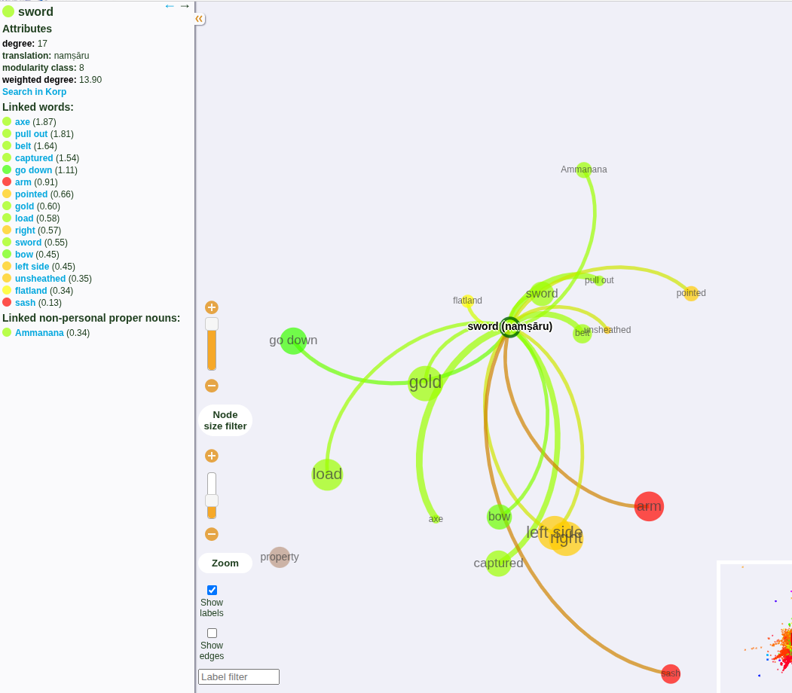
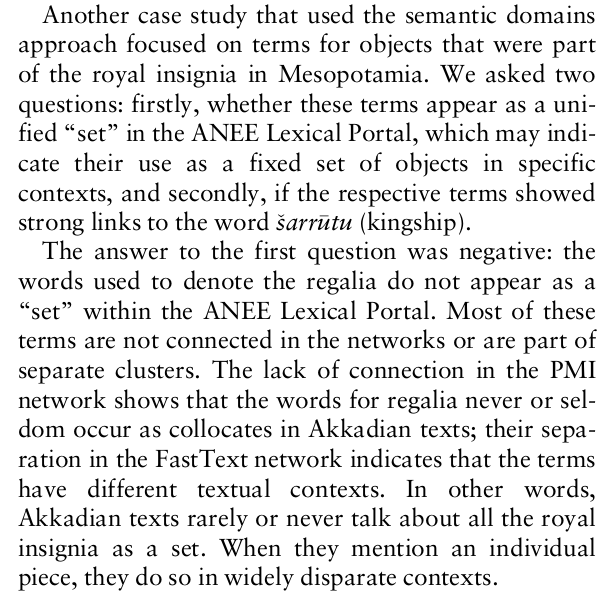
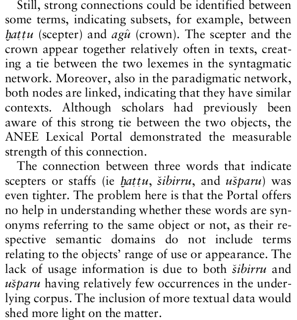

In the extinct family of East Semitic languages
In use approx. 2500 BC - 500 BC
Had strong influence on Aramaic, which ultimately replaced it
You may know it from: the epic of Gilgamesh
| Akkadian | Hebrew | Arabic | English |
|---|---|---|---|
| bītum | báyit (בַּיִת) | bayt (بَيْت) | house |
| šarrum | śar (שַׂר) | sarī (سَرِيّ) | king / prince / official |
| ilum | ʾēl (אֵל) | ilāh (إلٰه) → Allāh (الله) | God |
| šulmu | šālōm (שָׁלוֹם) | salām (سلام) | peace, well-being |
What is preserved from Akkadian is cuneiform inscriptions, wedge-shaped impressions in clay tablets
Logosyllabic: some words are written with a single logogram, others with syllable signs


A surprisingly large number of clay tablets have been preserved, ca. 500 000
Only about 10% of them have been transliterated, translated and published


The material covers long periods of history, it is plentiful, and hard to interpret (there are few experts)
Could computational methods reveal linguistic, cultural and social phenomana?
| bicycle | wheel | car | steer | ride | horse | grass | |
|---|---|---|---|---|---|---|---|
| bicycle | 31 | 5 | 11 | 39 | 2 | 3 | |
| wheel | 31 | 27 | 8 | 12 | 0 | 1 | |
| car | 5 | 27 | 13 | 5 | 4 | 2 | |
| steer | 11 | 8 | 13 | 9 | 1 | 0 | |
| ride | 39 | 12 | 5 | 9 | 27 | 10 | |
| horse | 2 | 0 | 4 | 1 | 27 | 19 | |
| grass | 3 | 1 | 2 | 0 | 10 | 19 |

\operatorname{pmi}(x;y) \equiv \log_2\frac{p(x,y)}{p(x)p(y)}
Word embeddings are usually used as inputs to ML pipelines, not directly interpreted
They are points in a space with hundreds of dimensions
PMI pairs form a network with N^M edges, and they don’t come with a natural 2D (or 3D) embedding
Dimensionality reduction - PCA (principal component analysis), LDA (linear discriminant analysis), …
Problematic: big linguistic features dominate, semantic distinctions disappear
Proximities in the embedding space or in PMI can be turned into “attractive forces” in a lower dimensional space
A “physics simulation” ends up in a settled / minimal energy state
Yifan Hu, Fruchterman-Reingold, ForceAtlas
ForceAtlas2: Mathieu Jacomy et al. (2014)





Ashurbanipal’s campaign: from Smith, George: History of Assurbanipall, Translated from the Cuneiform Inscription (1871, archive.org/details/bub_gb_pFk53uejMjcC/page/n63/mode/2up)
Map of Neo-Babylonian empire: en.wikipedia.org/wiki/Neo-Babylonian_Empire#/media/File:Neo-Babylonian_Empire_under_Nabonidus_map.png
Mask of Sargon: commons.wikimedia.org/wiki/File:Sargon_of_Akkad_(1936).jpg
Layout algorithms: journals.plos.org/plosone/article?id=10.1371/journal.pone.0098679
{kind=link}
.jpg){kind=link}